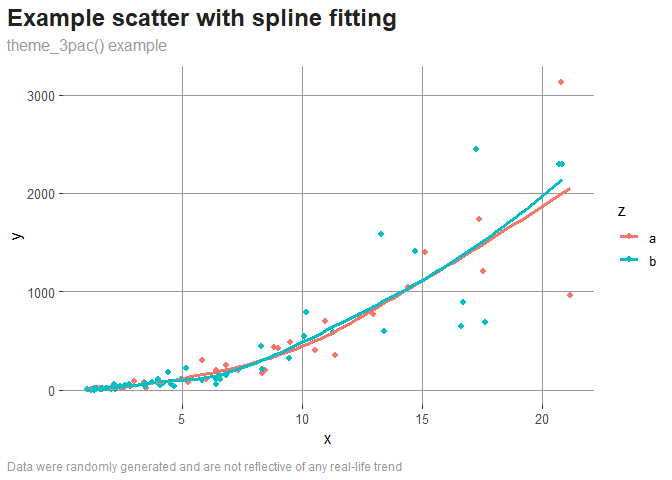

treepac is a collection of 3 functions (and a demonstration dataset) aimed to streamline repetitive tasks in exploratory data analyses, so users can quickly arrive at meaningful conclusions from their data.
Installation
You can install the development version of treepac from GitHub with:
install.packages("remotes")
install.packages("devtools")
devtools::install_github("ADC-405-S26/treepac")Once you have installed the package, remember to invoke it in your environment:
library(treepac)Examples
This section contains some examples of what you can do with the provided functions:
llreg
This function is supposed to show the elasticity between 2 variables (in other words, the linear relationship between the natural log of y and the natural log of x):
# the function takes 3 arguments
# treedat is the package's dataset
# remember to pass the column names in quotes!
llreg(treedat, "x", "y")
#>
#> Call:
#> lm(formula = log(df[[y]]) ~ log(df[[x]]))
#>
#> Residuals:
#> Min 1Q Median 3Q Max
#> -1.23697 -0.28854 0.07056 0.29880 1.07239
#>
#> Coefficients:
#> Estimate Std. Error t value Pr(>|t|)
#> (Intercept) 1.54410 0.09353 16.51 <2e-16 ***
#> log(df[[x]]) 1.96438 0.05335 36.82 <2e-16 ***
#> ---
#> Signif. codes: 0 '***' 0.001 '**' 0.01 '*' 0.05 '.' 0.1 ' ' 1
#>
#> Residual standard error: 0.4644 on 98 degrees of freedom
#> Multiple R-squared: 0.9326, Adjusted R-squared: 0.9319
#> F-statistic: 1356 on 1 and 98 DF, p-value: < 2.2e-16
pctchg
This function takes 2 arguments, a dataframe, and a numeric column within it and returns an additional column that shows the entry-to-entry percentage changes of the target column:
treedatgr <- pctchg(treedat, 'x')
# the output df contains an additional column:
# pctchg_x
head(treedatgr, 6)
#> period x y z pctchg_x
#> 1 1 1.048530 5.916203 a NA
#> 2 2 1.021098 7.444445 b -2.616218
#> 3 3 1.187908 2.437572 b 16.336356
#> 4 4 1.324990 8.075252 a 11.539755
#> 5 5 1.270861 4.735745 a -4.085256
#> 6 6 1.322699 6.522545 b 4.078963
theme_3pac()
This is a ggplot2 theme based off of theme_bw(). Atop the theme, a few changes were made to improve visual clarity and legibility:
library(ggplot2)
ggplot(data = treedat, aes(x = x, y = y, col = z)) +
geom_point() +
geom_smooth(se = FALSE) +
labs(title = 'Example scatter with spline fitting',
subtitle = 'theme_3pac() example',
caption = 'Data were randomly generated and are not reflective of any real-life trend') +
theme_3pac()
#> `geom_smooth()` using method = 'loess' and formula = 'y ~ x'